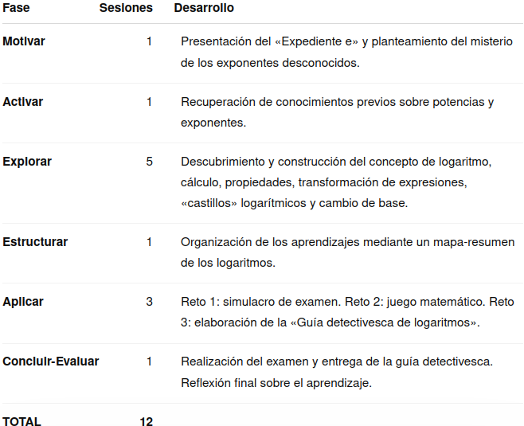

Justificación didáctica
La situación de aprendizaje «El expediente e: el misterio de los logaritmos» para 4ºESO (Matemáticas B) plantea el aprendizaje de los logaritmos desde un enfoque competencial, significativo e inclusivo. El alumnado parte de sus conocimientos sobre potencias y, mediante la resolución de diferentes retos, descubre progresivamente el concepto de logaritmo, sus propiedades y sus aplicaciones.
La propuesta aplica los principios pedagógicos de la LOMLOE mediante la resolución de problemas, el aprendizaje activo, la autonomía y la atención a los diferentes ritmos de aprendizaje. La utilización de una narrativa basada en Sherlock Holmes aporta un contexto motivador que da continuidad a las actividades y favorece la implicación del alumnado.
Se trabaja especialmente el ODS 4 (Educación de calidad) mediante el uso de diferentes recursos y formas de acceso a los contenidos, favoreciendo la participación y la autonomía. El ODS 5 (Igualdad de género) se aborda mediante la visibilización de referentes femeninos vinculados al ámbito científico y matemático y mediante una participación equitativa en las actividades.

El producto final, la «Guía detectivesca de logaritmos», permite al alumnado organizar, explicar y comunicar sus aprendizajes, convirtiéndose en creador de un recurso matemático propio y protagonista de su propio aprendizaje.
Temporización
La situación de aprendizaje se desarrolla a lo largo de 12 sesiones distribuidas de la siguiente forma:

La fase de estructuración constituye el núcleo de la propuesta, ya que permite sistematizar los procedimientos y desarrollar problemas de complejidad progresiva antes de la aplicación integrada.
Atención, esta es una propuesta de temporización inicial, no debe tomarse como definitiva.
Producto final
El producto final de la situación de aprendizaje recibe el nombre de «Guía detectivesca de logaritmos». Se trata de una guía visual y explicativa sobre los logaritmos, recopilando con sus propias palabras la definición, propiedades, cálculo, cambio de base y transformación de expresiones. Incluirá ejemplos y errores frecuentes.
Como parte del producto, también realizará una explicación mediante audio o vídeo con su propia voz, demostrando que comprende y sabe explicar los contenidos trabajados.
El producto final permite trabajar simultáneamente la competencia matemática, la comunicación lingüística, la competencia digital, la autonomía y la capacidad para organizar y comunicar información.
Además, convierte al alumnado en creador de un recurso educativo que podría ser utilizado posteriormente como material de consulta por otros compañeros y compañeras.
Rúbrica
Para evaluar el producto final puede usar la siguiente rúbrica:
| 5. Excelente | 4. Notable | 3. Adecuado | 2. Básico | 1. Insuficiente | |
|---|---|---|---|---|---|
| 1. Corrección y dominio de los contenidos matemáticos | Los contenidos son completos, rigurosos y muestran un dominio sólido y preciso. (1.0) | Los contenidos son correctos y completos, con alguna imprecisión menor. (0.75) | Recoge los contenidos fundamentales, aunque presenta algunos errores. (0.5) | Los contenidos son incompletos y presenta errores relevantes. (0.25) | Presenta importantes carencias y errores conceptuales. (0.1) |
| 2. Aplicación y razonamiento matemático | Selecciona estrategias adecuadas, las desarrolla con rigor y justifica de forma clara los procedimientos y resultados. (1.0) | Utiliza estrategias adecuadas y justifica correctamente la mayor parte de los procedimientos. (0.75) | Aplica procedimientos adecuados, aunque la justificación es limitada. (0.5) | Predomina la aplicación mecánica de procedimientos y existen dificultades de razonamiento. (0.25) | No utiliza estrategias adecuadas o no justifica los procedimientos. (0.1) |
| 3. Organización y síntesis de la información | Selecciona, relaciona y jerarquiza la información con gran capacidad de síntesis, facilitando una visión global de los contenidos. (1.0) | La información está bien seleccionada y organizada, con una síntesis adecuada. (0.75) | La información es suficiente y está razonablemente organizada. (0.5) | Incluye información poco relevante, repetitiva o insuficientemente estructurada. (0.25) | La información aparece desorganizada y dificulta la comprensión. (0.1) |
| 4. Conexión y transferencia de los aprendizajes | Relaciona diferentes contenidos matemáticos y los aplica de forma flexible a situaciones nuevas, estableciendo conexiones relevantes. (1.0) | Establece conexiones entre contenidos y los aplica adecuadamente a situaciones contextualizadas. (0.75) | Relaciona algunos contenidos y aplica procedimientos conocidos en situaciones similares a las trabajadas. (0.5) | Tiene dificultades para relacionar contenidos o transferir los procedimientos a situaciones diferentes. (0.25) | No establece conexiones significativas ni consigue aplicar los aprendizajes a nuevas situaciones. (0.1) |
| 5. Comunicación matemática en la infografía | Utiliza con precisión el lenguaje, la simbología y las representaciones matemáticas; las explicaciones son rigurosas y claras. (1.0) | Utiliza adecuadamente el lenguaje y la notación matemática, con pequeñas imprecisiones. (0.75) | La comunicación matemática es comprensible, aunque presenta algunos errores o imprecisiones. (0.5) | Presenta errores frecuentes de notación, lenguaje o representación. (0.25) | La comunicación matemática resulta confusa o incorrecta. (0.1) |
| 6. Diseño, legibilidad y recursos visuales | La estructura visual, distribución, tipografía, imágenes y recursos gráficos están plenamente al servicio de la comprensión matemática. (1.0) | El diseño es claro, equilibrado y facilita la comprensión. (0.75) | El diseño es funcional, aunque presenta algunos aspectos mejorables. (0.5) | La organización visual dificulta parcialmente la lectura o comprensión. (0.25) | El diseño dificulta significativamente el acceso a la información. (0.1) |
| 7. Audiodescripción: claridad y precisión | La audiodescripción permite reconstruir con precisión la estructura, elementos visuales y contenidos matemáticos de la infografía sin necesidad de verla. (1.0) | Describe adecuadamente los elementos esenciales y los contenidos principales. (0.75) | Permite comprender la información fundamental, aunque omite algunos aspectos relevantes. (0.5) | La descripción es incompleta o poco estructurada. (0.25) | No permite comprender adecuadamente el contenido de la infografía. (0.1) |
| 8. Expresión oral y adecuación del audio | Discurso fluido, estructurado y preciso, con vocabulario matemático adecuado y excelente control del ritmo, volumen y entonación. (1.0) | Expresión clara y adecuada, con pequeñas dificultades de fluidez. (0.75) | El discurso es comprensible, aunque presenta algunas dificultades expresivas. (0.5) | La descripción es incompleta o poco estructurada. (0.25) | La comunicación oral resulta difícil de seguir. (0.1) |
| 9. Disposición ante la tarea y compromiso con el aprendizaje | Se implica de forma constante, afronta la tarea con iniciativa y muestra una disposición constructiva incluso ante las dificultades. (1.0) | Mantiene una implicación constante y una actitud favorable durante el desarrollo de la tarea. (0.75) | Realiza la tarea adecuadamente, aunque su implicación es irregular en algunos momentos. (0.5) | Muestra escasa iniciativa o implicación y necesita estímulos frecuentes para avanzar. (0.25) | Presenta una actitud poco favorable hacia la tarea y apenas se implica en su desarrollo. (0.1) |
| 10. Flexibilidad cognitiva y curiosidad matemática | Explora alternativas, formula preguntas, establece conexiones inesperadas y modifica sus estrategias cuando la situación lo requiere. (1.0) | Considera diferentes posibilidades y muestra interés por comprender y explorar más allá del procedimiento inmediato. (0.75) | Acepta alternativas y muestra curiosidad ante algunas situaciones, aunque tiende a utilizar estrategias conocidas. (0.5) | Se muestra poco flexible ante procedimientos diferentes y tiene dificultades para explorar alternativas. (0.25) | Se aferra a un único procedimiento y muestra escaso interés por explorar o comprender otras posibilidades. (0.1) |
- Actividad
- Nombre
- Fecha
- Puntuación
- Notas
- Reiniciar
- Imprimir
- Aplicar
- Ventana nueva
Metodología
La metodología combina aprendizaje significativo, resolución de problemas, gamificación y narrativa.
El elemento vertebrador es la utilización del universo de Sherlock Holmes como contexto narrativo. El alumnado se convierte en un equipo de detectives matemáticos y los diferentes contenidos aparecen como herramientas necesarias para resolver los casos planteados.
La narrativa no se utiliza únicamente como elemento decorativo, sino como estructura que proporciona sentido y continuidad a las actividades. Muchos conceptos matemáticos se presentan como pistas, procedimientos de investigación y herramientas necesarias para avanzar en el expediente.
La secuencia parte de los conocimientos previos sobre potencias y conduce progresivamente hacia la formalización de los logaritmos. Después, el alumnado practica los procedimientos mediante actividades graduadas y finalmente debe utilizarlos para elaborar un producto propio.
Se combinan diferentes formas de trabajo:
- Trabajo individual, para la comprensión y práctica de procedimientos.
- Explicación docente, especialmente en la formalización de los conceptos.
- Ejemplos resueltos, que permiten observar procedimientos completos antes de realizar actividades autónomas.
- Vídeos explicativos, que permiten revisar los contenidos a diferentes ritmos.
- Actividades de aplicación, para trasladar los conocimientos a nuevas situaciones.
- Creación de un producto final, que exige seleccionar, organizar, comprender y comunicar los aprendizajes.
De esta forma, el alumnado pasa progresivamente de comprender el procedimiento, a aplicarlo, explicarlo y finalmente utilizarlo para crear un recurso propio.
♿ Principios DUA aplicados
La situación incorpora los principios DUA mediante diferentes formas de implicación, representación y expresión:
- Implicación: narrativa de Sherlock Holmes, retos progresivos, actividades variadas y trabajo cooperativo.
- Representación: explicaciones orales y escritas, fórmulas, ejemplos resueltos, esquemas y vídeos explicativos de YouTube, que pueden pausarse, repetirse y revisarse según las necesidades de cada alumno o alumna.
- Acción y expresión: resolución de actividades, participación en retos, elaboración de la Guía detectivesca de logaritmos y explicación final mediante audio o vídeo con la propia voz.
De este modo, se ofrecen diferentes vías para acceder a los contenidos, participar en el aprendizaje y demostrar lo aprendido, reduciendo las posibles barreras de aprendizaje.